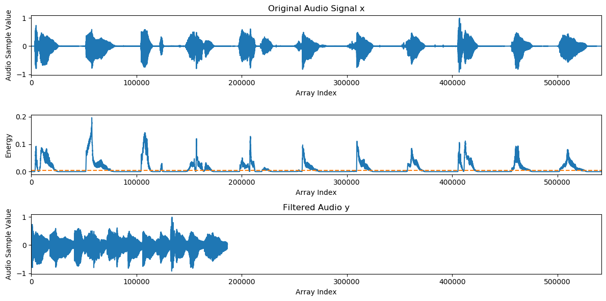
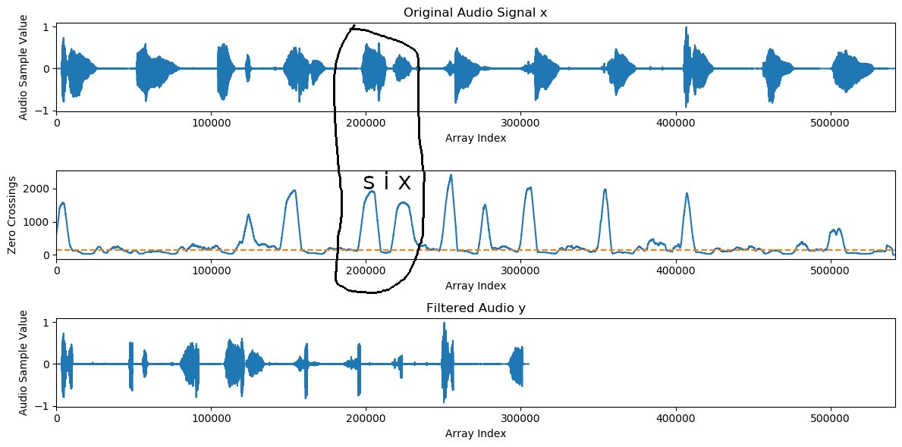

Lab 6: Audio Filtering
Due Friday 3/6/2020
Overview
The purpose of this lab is to give students more practice with arrays and loops in Java by implementing a "filtering" method, in which parts of an audio clip are removed based on different criteria.
Code
The code for this assignment can be found in the homework 5 repository. You will be editing the file AudioFiltering.java
Overview
As we have seen, digital audio can be represented as an array of doubles between -1 and 1, which we refer to as samples. In this assignment, you will fill in a method that takes in a sequence of audio samples x and creates a new array of audio samples y which is a subset of x. There are three options, and you must implement one. Each option consists of the following steps:
- Count the number of samples in
xthat are above or below a certain threshold ("energy" for loudness filtering or "zero crossings" for vowel/consonant filtering). This will be the size of the arrayy -
Create an array
yof the appropriate size. -
Copy over the values from
xtoythat exceed a threshold.
Option 1: Loudness Filtering
Your first option is to fill in the function
public static double[] filterLoudness(double[] x, int win, double cutoff)
This method should return an array y where all of the quiet regions have been removed. The first line of this function has been filled in for you:
double[] energy = ArrayUtils.getLocalEnergy(x, win);
This line creates an array energy which is parallel to x. In particular, energy[i] holds a number between 0 and 1 which is the mean of the square of the audio samples in x between indices i-win and i+win (Click here to see the implementation details if you're curious, but you can treat that as a black box for the purposes of this assignment). energy[i] is higher if the audio samples in x around index i are louder, and lower otherwise. Let's say, for example, that we have the following audio:
Below is a plot that shows the original samples of x (top plot), followed by the energy array (middle plot). The regions in which the person is speaking have higher energy, and the regions between speech has lower energy. If we choose a cutoff of 0.005 in energy (shown as the dotted line), and we only fill in samples in y that are above this cutoff, then we get the following audio (which is also shown as the bottom plot)

Option 2: Consonant Filtering
Your second option is to fill in the function
public static double[] filterZCS(double[] x, int win, int maxzcs)
This method should return an array y where all of the vowels have been removed from the audio. The first line of this function has been filled in for you:
int[] allzcs = ArrayUtils.getZeroCrossings(x, win);
This line creates an array allzcs which is parallel to x. In particular, allzcs[i] holds the number of zero crossings in x between indices i-win and i+win (Click here to see the implementation details if you're curious, but you can treat that as a black box for the purposes of this assignment). Generally, allzcs[i] is higher if x[i] is in the middle of a consonant, and it is lower otherwise. This is because consonants are higher frequency than vowels, which means they have a smaller period (i.e. they go through more cycles in the same amount of time, which means they cross the x axis more). Let's say, for example, that we have the same audio clip:
If we create a new array y in which the zero crossings in a window of size 4001 around x must be at least 150, we get the following audio
Below is a plot that shows how this happens. As before, the original audio is up top, and the filtered audio is at the bottom. The middle plot shows the zero crossings counted in windows of size 4001 around each sample, and a threshold of 150 is drawn as a dotted line. As an example, consider the circled region around the letter "six." The zero crossings peak around s and x, but they dip around i.

Option 3: Vowel Filtering
You can also choose to create a method which is almost identical to the consonant filtering method, but where you only keep samples if the zero crossings are below a certain amount. Instead of keeping the consonants, this will keep the vowels. For example, if we create a new array y in which the zero crossings in a window of size 4001 around x must be at most 150, we get the following audio
What To Submit
You must submit the file Lab5.java to Canvas. Please indicate as a comment which of the three options you chose to implement.